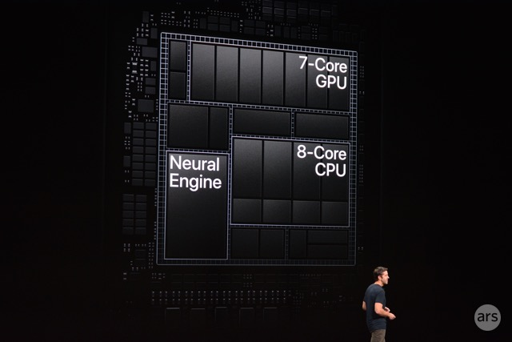

애플에서 설계한 AP로 자사 기기들을 위해 개발되었다 ARM Holdings에서 개발한 마이크로아키텍처의 라이센스를 취득해 ARM Cortex-A 시리즈 소속 CPU 아키텍처를 사용하거나, 명령어셋 라이센스를 취득해 자체적인 ARM 호환 CPU 아키텍처를 설계해 사용하고 있다. GPU 이매지네이션 테크놀러지 PowerVR 그래픽의 GPU IP 라이센스를 취득해 사용했지만 2017년, A11 Bionic APL1W72를 기점으로 자체 디자인한 GPU를 사용하고 있다. 
기존의 모바일 AP와는 다르게, 애플 A 시리즈의 경우에는 iPhone 또는 iPad를 발표하는 키노트에서 공개되는 정보 이외에는 어떤 정보도 주어지지 않는다, 이는 애플이 모바일 AP 시장에 진출한 목적 자체가 타 업체들과는 조금 다르기 때문이다.애플은 오로지 자사의 제품에만 사용할 목적으로 독자 아키텍처까지 개발하는 특수한 기업이다. 소수의 기종으로 많은 판매량을 올리는 애플만이 가능한 재주로, 삼성전자와 같은 제품 다변화를 통해 수요 창출에 나서는 다른 기업과의 차이에서 생기는 특수성 때문이다. 다른 모바일 AP 제조사의 경우에는, 일단 모바일 시장을 주력으로 하는 것은 애플과 같지만, ARM CPU 아키텍처의 장점인 저전력을 무기로 차량용 AP, 게임기용 AP,스마트 워치용 AP, 심지어는 저전력 서버용 AP까지 수요를 확대하려는 노력을 하고 있다. 동시에 소프트웨어 관리 능력도 관련 업체 중 상위급이기에 가능한 것으로,모바일 AP에서 CPU 아키텍처가 차지하는 부분을 최소화하고 이를 GPU의 다이 시이즈에 할당하고 있다. 큰 크기답게 성능도 덩치 값을 해주고 있으며 이를 증명하듯 벤치마크 프로그램상 그래픽 성능으로는 모바일 AP 중에서는 OS의 차이가 있어 오픈소스 진영에 비하여 유리하기는 하지만, 사실상 ARM 계열 끝판왕이라는 NVIDIA Tegra GPU에 비슷한 시기에 준하는, 모바일 특히 스마트폰중에서 최상급의 성능을 보여주고 있다. 이후, 지속적인 생산 공정의 미세화와 자체 GPU IP 개발로 면적 당 성능비 역시 지속적으로 높아지고 있다다만, 애플이 자체적으로 보유한 통신 모뎀 솔루션이 아예 존재하지 않기 때문에 이동통신 네트워크를 모바일 AP에서 지원하는 원칩 AP는 존재하지 않는다. iPhone이나 iPad 등 통신 모뎀 솔루션이 필요할 기기에는 인텔이나 퀄컴에서 공급받아 사용한다. 최신 모뎀을 스냅드래곤에 끼워팔기하는 상술로 악명높은 퀄컴도 스냅드래곤 810 사태 때 반강제로 엑시노스 7420을 써야 하는 기기[7]만큼은 모뎀만이라도 삼성전자에 팔아주고 애플 앞에서는 한수 접고 들어가긴 하지만, 그럼에도 만족스럽지 않은 부분이 있는지 애플은 지속적으로 성능에서 뒤쳐지는 인텔에서 공급받는 모뎀의 물량을 꾸준히 늘리는 중이다.
애플은 자체적인 반도체 생산 라인이 존재하지 않는 팹 리스 업체이기 때문에 자체 생산이 불가능하므로 파운더리 생산사에 위탁 생산을 맡긴다. 전통적으로 애플 A 시리즈가 iPhone 4에 탑재되기 이전에 모바일 AP를 공급해준 삼성전자 시스템 LSI 사업부가 생산을 해왔고 애플 A 시리즈의 설계에도 관여한 부분이 있는 것으로 알려졌다. 문제는, 삼성전자 무선 사업부가 애플만큼, 오픈소스 진영에서는 애플 이상으로 시장에서 영향력이 큰 스마트폰 제조사가 되면서 마음 놓고 위탁할 수 없게 되어버린 애플은 보안 등의 이유로 이른바 '탈 삼성 전략'을 추진하기 시작했다. 하지만, 모바일 AP의 경우에는 가장 최신 공정에서 그것도 엄청난 물량을 요구하는 애플의 주문을 받을 회사가 그리 마땅치 않았기에 '탈 삼성 전략'이 최고조에 올랐던 iPhone 5s도 모바일 AP인 Apple A7은 삼성전자 시스템 LSI 사업부에서 생산되었다. 하지만, 모바일 AP 부분도 TSMC에 지속적으로 투자하는 등 '탈 삼성 전략'을 지속적으로 준비했고, 삼성전자 시스템 LSI 사업부의 내부 사정까지 겹쳐서 Apple A8은 TSMC의 20nm SoC 공정에서 생산되었다. 이러한 이유로 앞으로도 애플은 삼성전자 시스템 LSI 사업부와 TSMC의 최신 공정 상황에 따라 파운더리 생산사를 계속 변경할 것으로 보인다. 그러나 동 시기에 애플 A 시리즈의 생산공정은 거의 항상 삼성전자 생산분이 더 미세하였으므로 애플 모바일 제품 사용자들 사이에서 두 생산분 사이에 성능 격차가 존재하는지에 대한 의문을 품는 것은 물론이고, 결국에는 TSMC 생산분보다 삼성전자 생산분을 더 선호하게 되는 사태가 발생하기도 하였다. 그러나 이 둘의 성능은 오차범위 내로 서로 엎치락뒤치락 하였기에, 공정에 크게 좌우되지 않고 사실상 동급으로 판단되어 요즈음에는 이러한 것들이 크게 줄어든 상황이다.